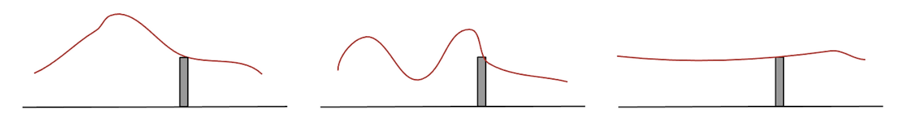
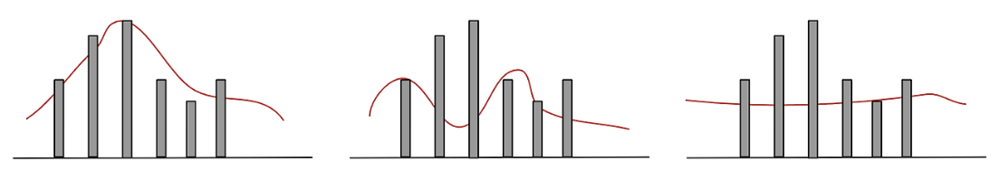

From Prior to Posterior with Bayes’ Theorem
Prior
\(P(\theta)\) : 데이터를 보기 전에, \(\theta\)에 대해 우리가 갖는 믿음
- “동전은 대체로 공정할 것이다.” \(\rightarrow \theta\)는 0.5 근처일 것이다.
- “이 환자는 코로나에 걸릴 확률이 1%이다.”
- Prior는 외부 정보, 경험, 믿음 등을 기반으로 \(\theta\)가 이런 값일 것 같아 라고 생각하는 것
의문점 : \(\theta\)가 이럴 것 같다고 생각하는 건 찍는 거 아닌가요?
- 맞습니다. Prior는 외부 정보, 사전 지식이나 경험이 있을 수록 더 정교하게 설정할 수 있습니다.
- 예를 들어, 주사위에 대해 아무 정보를 모르는 외계인이 주사위 던지기의 Prior를 설정한다고 하면 1이 나올 확률을 0.5라고 설정할 수 있습니다.
- 틀릴 수 있는 Prior는 데이터가 부족한 상황에서 유용하고 새로운 데이터가 들어오면 posterior로 업데이트 되면서 최적의 확률을 찾아갑니다.
Probability
\(P(data\,|\,\theta)\) : \(\theta\)가 고정된 모수일 때, 그것으로부터 데이터가 나올 확률
\(\theta\)가 고정되어있을 때 어떤 사건이 일어날 “가능성”을 수치로 표현하는 것
Likelihood
\(P(data\,|\,\theta)\) : 결과를 알고 있을 때, 그 결과를 가장 잘 설명하는 \(\theta\)는 어떤 값일까?
- \(L(\theta) = L(\theta\,|\,data) = P(data\,|\,\theta)\)
- 데이터들이 주어졌을 때, 전체 사건을 설명할 수 있는 확률 모델을 구하려는 것

어떤 사건을 설명할 수 있는 모델 빨간색은 무한하게 많습니다.
조금 더 빨간색을 결정하기 위해서 데이터를 더 뽑아보면 아래와 같은 그림이 가능합니다.

셋 중 어떤 곡선이 가장 그럴듯한가요? 이런식으로 Likelihood는 어떤 사건이 벌어졌을 때, 그 사건을 설명할 수 있는 모델을 의미합니다.
이미 발생한 어느 사건을 두고, 그 사건을 가장 잘 설명할 수 있는 모델을 얻는 과정을 Maximum Likelihood Estimate라고 합니다.
의문점1 : \(L(\theta) = L(\theta\,|\,data) = P(data\,|\,\theta)\)을 보면 마지막 수식은 Probability의 수식인데..? 그럼 Likelihood와 Probability가 같은 거야?
- 수식은 같지만, 해석이 다릅니다. 절대로! 같다고 보면 안됩니다.
- \(P(data\,|\,\theta)\)은 확률(probability) 관점에서도 쓰이고, 우도(likelihood) 관점에서도 쓰입니다. 하지만 무엇을 고정하고, 무엇을 변수로 보느냐에 따라 의미가 완전히 달라집니다.
- 우도(likelihood)는 data를 고정하고 \(\theta\)에 대한 함수로 바라봅니다.
의문점2: \(P(data\,|\,\theta)\)이면 \(\theta\)가 주어졌다는 거 아닌가요? 이미 theta는 어떠한 값으로 주어졌는데 어떻게 \(\theta\)를 변수처럼 해석하는 거죠?
- 무엇이 주어졌다고 생각하는 것이 아닌 그저 표현상으로 조건부확률처럼 표현한 것입니다.
- \(P(data\,|\,\theta)\)은 그냥 함수 모양이고 우리는 이걸 “
likelihood로 쓸 거야” 라고 선언하고 쓰는 것.
결론! \(\theta\)를 변수로 놓고 어떤 \(\theta\)가 데이터를 가장 그럴듯하게 만드는가?
Posterior
\(P(\theta\,|\,data)\) : 데이터를 관측한 후, \(\theta\)가 맞을 확률
- “이 데이터가 나왔는데, 이 \(\theta\)가 맞을 확률은 얼마인가?”
\(P(data\,|\,\theta)\) : \(\theta\)가 고정된 모수일 때, 그것으로부터 데이터가 나올 확률
\(\theta\)가 고정되어있을 때 어떤 사건이 일어날 “가능성”을 수치로 표현하는 것
베이즈 정리 (Bayes’ Theorem)
\[ P(\theta\,|\,data) = \frac{P(\text{data}\,|\,\theta) \times P(\theta)}{P(\text{data})} \]
처음에 감으로 설정했던 Prior를 데이터를 관찰하고 난 후 Likelihood를 통해 업데이트하여 새로운 Posterior를 얻는 과정.
의문점1 : Likelihood를 이용해서 업데이트..?
- \(P(\theta)\)는 우리가 설정한 사전확률이다. 이것은 틀릴 수도 있고 맞을 수도 있는데
Prior를 이용해서Likelihood값을 구할 수 있게 된다. - 만약
Likelihood가 높게 나온다면 우리가 설정한 Prior가 옳은 편이라고 믿을 수 있고,Prior에 가중치를 곱하여서Posterio를 구할 때 도움을 주게 된다. - 이것이
Prior를Posterior로update하는 과정에서Likelihood를 통해 업데이트한다고 표현하는 이유이다.
의문점2 : 의문점1 설명에서 Prior를 이용해서 Likelihood를 구한다고 했는데 어떻게?
Prior(= \(P(\theta)\)) 을 설정했다는 것은 곧 \(\theta\)를 설정했다는 것과 같은 의미이다.- \(\theta\)를 설정했기 때문에
Likelihood는Data도 주어지고 \(\theta\)도 주어졌기에 값을 산출할 수 있게 된다.